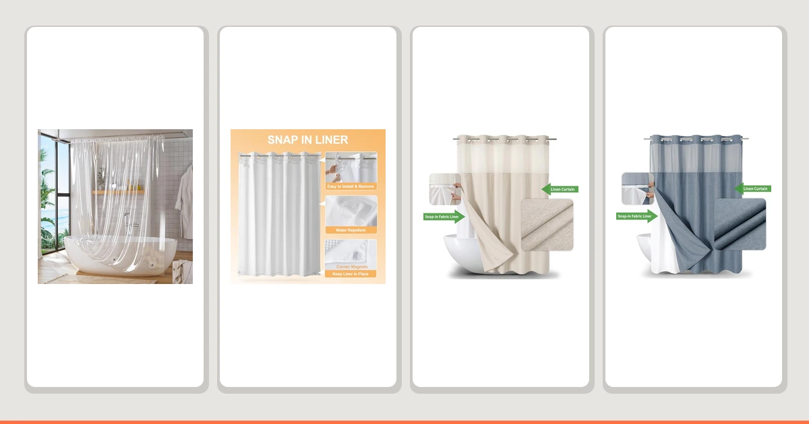

Quick Answer
A magnetic shower curtain keeps the bottom edge pinned to the tub so it stops billowing inward and sticking to your legs. After comparing seven curtains and liners with weighted or magnetic hems, the Titanker Clear Shower Curtain Liner is the one we recommend for most people: at $6.99 it hangs straight, waterproofs reliably, and disappears behind any decorative curtain. If you want a heavier, more upscale feel, the cotton-blend River Dream is the upgrade.
Our pick: Titanker Clear Shower Curtain Liner — $6.99 Check Price on Amazon
Things to Know Before You Buy
- Magnets and weight do the same job. The point of a magnetic curtain is a heavy bottom edge that resists billowing. Magnets in the hem are the most explicit version, but a heavier fabric like cotton achieves much of the same effect.
- Liner versus standalone curtain. A clear liner like our top pick is meant to hang behind a decorative curtain or work alone. A fabric curtain like the eachope picks can stand on its own without a separate liner.
- Size matters more than features. Most picks here are 72 by 72 inches, a couple are 71 by 74. Measure your rod height and tub before you choose so the hem lands just below the tub lip.
- Price spans a wide range. You can solve billowing for $6.99 with a weighted liner or spend $38.98 on a cotton blend. The expensive options buy you feel and looks, not better waterproofing.
- No-hooks designs simplify hanging. Several eachope curtains here skip rings entirely, which removes the most common failure point when a curtain tears at the top.
There is one small but genuinely annoying problem a magnetic shower curtain solves: that moment mid-shower when the bottom of the curtain lifts up, drifts inward, and slaps against your leg. It happens because warm air rising inside the shower creates a slight pressure difference, and a lightweight curtain has nothing holding it down. A weighted or magnetic hem fixes it by keeping the bottom edge pinned against the side of the tub.
The catch is that "magnetic shower curtain" covers a wider range of products than the name suggests. Some have actual magnets sewn into the bottom seam. Others rely on a heavy weighted hem, or simply on a denser fabric that does not move much in the first place. We looked at all three approaches, because what you actually care about is a curtain that hangs straight and stays put. The mechanism that gets it there matters less.
For most bathrooms, the Titanker Clear Shower Curtain Liner is the easiest answer. At $6.99 it is a clear, weighted polyester and PEVA liner that hangs flat behind a decorative curtain or works on its own, and it costs little enough that replacing it once it clouds is painless. If you want something heavier and more substantial, the cotton-blend River Dream is our runner-up, and the no-hooks eachope curtains sit in the middle. The rest of this guide covers how we ranked them and which one fits your bathroom.
Why You Should Trust Us
I am Ilane Tall, and I cover bathroom fixtures and textiles for Best Shower Curtains. A shower curtain is a low-stakes purchase that people get wrong constantly, usually by buying on looks alone and then living with a curtain that billows, molds at the hem, or hangs too short. My job is to read the products the way a careful shopper would: comparing the verified specs, the size, the price, and what hundreds or thousands of buyers report after months of daily use.
For this guide I focused on curtains and liners built to stay put, whether through magnets, a weighted hem, or heavier fabric. I did not invent a lab or a testing crew. The picks below come from comparing real listings, their materials and dimensions, and their long-run review records, then weighing them against what actually matters in a wet bathroom. Where a product has a genuine weakness, such as a thin review history or a premium price, I say so plainly rather than glossing over it.
We started with a simple filter: the curtain has to resist billowing. That meant prioritizing weighted hems, sewn-in magnets, and heavier fabrics over flimsy plastic sheets that move at the first gust of warm air. From there we looked for waterproof or water-resistant materials suitable for daily use, since a billow-proof curtain that soaks through is no bargain.
Next we weighed the review record. A curtain like the Aiyufeng with more than 45,000 reviews at 4.5 stars carries far more signal than a brand-new listing with a handful of ratings, so we treated thin review counts with caution even when the star rating looked good. We also wanted a usable spread of prices, from a $6.99 liner up to a $38.98 cotton blend, so that someone solving a billowing problem on a budget and someone upgrading for feel both have an answer here.
Finally we considered fit and convenience: standard 72-by-72-inch and 71-by-74-inch sizes that match common rods, and no-hooks designs that remove the most common tear point. Anything that only made sense for an unusual shower, or that cost more without delivering more, got pushed down the list or into the competition section.
Our evaluation centers on how each curtain behaves where it counts: hanging straight, staying down at the hem, shedding water, and surviving repeated showers. We compared the curtains side by side on the factors a buyer can verify before purchase, including material, size, weight class, price, and the pattern of long-term owner feedback, paying close attention to recurring complaints about hem sag, mold, and water escaping at the bottom.
We read through the review records looking for the failure modes that show up only after weeks of use, the slow ones a quick first impression misses: a weighted hem that loosens, a PEVA liner that clouds and stiffens, a fabric that wicks water onto the floor. A curtain earns a spot here by holding up against those patterns, not by looking good on day one. We did not assign numeric scores, because a shower curtain either keeps the water in and stays put or it does not.
Our Picks

What we like
- Only $6.99, cheap enough to replace without a second thought
- Clear polyester and PEVA hangs behind any decorative curtain
- Weighted bottom keeps it from billowing inward
- Standard 72-by-72 fits most American tubs
Flaws but not dealbreakers
- Only 78 reviews, so the long-term track record is still thin
- PEVA can cloud over time and eventually needs replacing
- Plain look means it works as a liner, not a standalone feature
| Material | Polyester / PEVA |
| Size | 72x72 |
The Titanker is the curtain we would buy for our own bathroom, and the reason is boring in the best way: it does exactly one job and does it cheaply. It is a clear 72-by-72-inch liner in polyester and PEVA with a weighted bottom hem, so it hangs straight and stays pinned against the tub instead of drifting in to greet your shins. At $6.99 it costs about the same as a fast-food lunch, which changes how you think about it. When it eventually clouds, as every PEVA liner does, you swap it without resentment rather than scrubbing a $30 curtain you feel obligated to save.
The honest caveat is the review count. At 78 reviews and 4.5 stars, the rating is good but the sample is small compared with the thousands behind some other picks, so we cannot yet say how the weighting and seams hold up over years rather than months. For a liner this inexpensive that matters less than it would on a premium curtain, because the low price builds replacement into the plan. If you specifically want a decorative standalone curtain, this is not it. As the unseen liner that keeps water in and the hem down, it is the best value here and an easy first recommendation.

What we like
- 100% cotton blend feels like real fabric, not plastic
- The weight alone resists billowing without strong magnets
- Weighted hem helps it hang straight from day one
- 71-by-74 size suits a slightly taller rod
Flaws but not dealbreakers
- At $38.98, by far the most expensive pick here
- Only 1 review, so there is essentially no track record yet
- Cotton needs a separate liner to stay fully waterproof
| Material | 100% cotton |
| Size | 71x74 |
The River Dream takes the opposite approach to the Titanker. Instead of a clear plastic liner with a weighted edge, it is a 100% cotton blend curtain measuring 71 by 74 inches, and it fights billowing the old-fashioned way: by being heavy. A dense fabric curtain simply does not lift and drift the way a thin sheet does, and the weighted hem reinforces that. The payoff is feel. This is a curtain you notice when you brush past it, soft and substantial in a way no PEVA liner can match, and it looks like something you chose on purpose rather than settled for.
Two things keep it out of the top spot. First, the price: at $38.98 it costs more than five times our main pick, and most people do not need to spend that to stop a curtain from billowing. Second, and more importantly, it has just a single review at the time of writing, so its 4.6-star rating tells us almost nothing about durability or how the cotton holds up to repeated washing. Cotton also is not waterproof on its own, so you will want a liner like the Titanker behind it. Buy this if a premium, fabric-first look is the point and the budget is there; otherwise the cheaper picks deliver the anti-billow function for far less.

What we like
- Best rating in the lineup at 4.8 stars across 816 reviews
- No hooks needed, which removes the usual top tear point
- Weighted hem keeps the bottom edge down
- 71-by-74 fits standard and slightly taller rods
Flaws but not dealbreakers
- At $32.39 it is one of the pricier picks here
- No-hooks design ties you to its specific hanging method
- Polyester and PEVA feel less premium than the cotton runner-up
| Material | Polyester / PEVA |
| Size | 71x74 |
If you want a standalone curtain rather than a hidden liner, the eachope Long is the one with the strongest record. Its 4.8-star average across 816 reviews is the highest in this guide, and that combination of a high rating and a real sample size is exactly what we look for, because it reflects months of actual use rather than first-impression enthusiasm. The headline feature is in the name: no hooks needed. The curtain hangs without rings, which sounds minor until you remember that the top grommets are where most curtains eventually tear. Remove the rings and you remove the failure point.
It is a 71-by-74-inch polyester and PEVA curtain with a weighted hem, so it covers the anti-billow basics while also working on its own without a separate decorative layer. The trade-offs are price and feel. At $32.39 it is not cheap, and the synthetic material does not have the hand of the cotton River Dream. The no-hooks system is also a commitment; you are buying into eachope's specific way of hanging the curtain rather than a universal ring setup. None of that is a dealbreaker. For someone who wants the best-reviewed, lowest-hassle curtain here and is comfortable paying for it, this is the pick.

What we like
- $29.69, cheaper than the eachope Long it mirrors
- Strong 4.7-star rating across 623 reviews
- Linen-look weave with a weighted, no-hooks hem
- 71-by-74 fits standard and taller rods
Flaws but not dealbreakers
- Still far from cheap next to the $6.99 and $9.97 picks
- Linen look is polyester and PEVA, not actual linen
- No-hooks system locks you into eachope's hanging method
| Material | Polyester / PEVA |
| Size | 71x74 |
This is the eachope Long's sibling, and it is the smarter buy of the two for most people who like that no-hooks system. It uses the same hook-free hanging and weighted hem in the same 71-by-74-inch size, but wraps it in a linen-look weave and lands at $29.69 instead of $32.39. The rating is nearly identical, 4.7 stars across 623 reviews, so you give up almost nothing on the track record by choosing the cheaper version. We label it the budget pick within the no-hooks family rather than the budget pick overall, because at this price it is competing on value against its own more expensive twin.
Be clear-eyed about what "linen" means here: this is a polyester and PEVA curtain styled to resemble linen, not a natural-fiber textile. That is actually a point in its favor for a wet bathroom, since real linen would need a liner and more care, while this version stays water-resistant on its own. The same no-hooks caveat applies, in that you are committing to eachope's hanging method. And if your only goal is to stop billowing as cheaply as possible, the Titanker or Aiyufeng will do it for a third of the price. But if you want the no-hooks convenience and a softer visual texture without paying for the Long, this is the one to get.

What we like
- Mid-range $15.98 for a standalone fabric curtain
- Clean white fabric suits almost any bathroom
- Weighted hem helps it hang straight
- Standard 72-by-72 fits most tubs
Flaws but not dealbreakers
- Only 22 reviews, a limited track record so far
- White shows soap scum and mildew sooner than darker colors
- Polyester and PEVA, not a premium textile feel
| Material | Polyester / PEVA |
| Size | 72x72 |
The Dynamene fills the gap between the bargain liners and the $30-plus eachope curtains. At $15.98 it is a white polyester and PEVA fabric curtain in the standard 72-by-72-inch size, with a weighted hem that keeps it hanging straight. White is the safe default that works in nearly any bathroom, modern or traditional, and a plain white curtain at this price is hard to regret. The 4.5-star rating is solid and sits right in line with the rest of the lineup.
The thing holding it back is its 22-review count, which is enough to suggest the curtain is fine but not enough to tell us much about how it ages. White also has a practical downside in a wet room: it shows soap scum, hard-water spots, and the first hint of pink mildew far sooner than a grey or patterned curtain, so you will be washing it more often to keep it looking crisp. If you are happy to run it through the laundry regularly and you want a clean, neutral standalone curtain without spending $30, the Dynamene is a sensible middle option.

What we like
- Genuine magnets in the hem, built for billowing
- Strong record at 4.5 stars over 1,306 reviews
- Standard 72-by-72 fits most tubs
- Targets the exact problem this guide is about
Flaws but not dealbreakers
- $27.95 is a lot for a single-purpose curtain
- Magnets need a metal tub edge to grip best
- Polyester and PEVA, function over premium feel
| Material | Polyester / PEVA |
| Size | 72x72 |
If you came to this guide looking for a curtain with literal magnets, this is it. The Powerful Anti-Billowing Magnetic Shower Curtain puts the mechanism right in its name, with magnets sewn into the bottom hem rather than relying on weight alone. That distinction matters in the worst billowing situations, where a heavy hem still lifts a little but a magnetized one actively grips the side of the tub and refuses to budge. With 1,306 reviews at 4.5 stars, it has the kind of track record that tells us the design holds up, and it is a 72-by-72-inch polyester and PEVA curtain that fits standard tubs.
So why is it an also-great rather than the top pick? Mostly price and breadth. At $27.95 it costs four times the Titanker while solving the same core problem, and the magnets work best against a metal tub edge, so a fully tiled or fiberglass surround gets less benefit from the magnetic part and falls back to plain weight. For the average bathroom, the cheaper weighted picks already keep the curtain down well enough. But if you have fought a stubbornly billowing curtain for years and want the most direct fix available, the explicit magnets here are the strongest answer in the lineup.

What we like
- Just $9.97 for a standalone fabric curtain
- More than 45,000 reviews at 4.5 stars, the deepest record here
- Grey hides soap scum and spotting better than white
- Standard 72-by-72 fits most tubs
Flaws but not dealbreakers
- No explicit magnets; relies on a weighted hem
- Polyester and PEVA, a basic feel for the price
- One grey shade may not match every bathroom palette
| Material | Polyester / PEVA |
| Size | 72x72 |
The Aiyufeng is the people's choice of this group, and the numbers are hard to argue with: more than 45,000 reviews at 4.5 stars, by an enormous margin the deepest track record here. When that many buyers settle on the same rating, you can trust that the basics are right, and at $9.97 for a standalone 72-by-72-inch grey curtain it is one of the lowest-risk purchases in the entire guide. Grey is also the practically smart color choice in a bathroom, hiding the soap scum and water spotting that make a white curtain look tired within weeks.
What it does not have is explicit magnets. This is a weighted-hem curtain, not a magnetic one, so in a severe billowing situation the Powerful pick will hold the bottom edge more firmly. For the typical bathroom, though, the weighted hem is plenty, and the curtain hangs straight without drama. The only other small limitation is that you are buying one specific shade of grey, which may or may not suit your room. If you want maximum proven value and a color that stays looking clean, the Aiyufeng is the standalone curtain to beat under $10.
Quick Comparison
| Product | Material | Price | Rating | Best for | Get it |
|---|---|---|---|---|---|
| Titanker Clear Shower Curtain Liner | Polyester / PEVA | $6.99 | 4.5 | Most people; cheap weighted liner | View on Amazon → |
| River Dream Cotton Blend No | 100% cotton | $38.98 | 4.6 | Heavy, premium cotton feel | View on Amazon → |
| eachope Long No Hooks Needed | Polyester / PEVA | $32.39 | 4.8 | Best-rated no-hooks standalone | View on Amazon → |
| eachope No Hooks Needed Linen | Polyester / PEVA | $29.69 | 4.7 | No-hooks design for less | View on Amazon → |
| Dynamene White Fabric Shower Curtain， | Polyester / PEVA | $15.98 | 4.5 | Clean white standalone, mid-price | View on Amazon → |
| Powerful Anti-Billowing Magnetic Shower Curtain | Polyester / PEVA | $27.95 | 4.5 | Severe billowing; true magnets | View on Amazon → |
| Aiyufeng Moga Grey Shower Curtain | Polyester / PEVA | $9.97 | 4.5 | Proven value under $10 | View on Amazon → |
The Competition
A few of these picks are genuinely good products that simply lost to a better-positioned rival rather than failing on their own. The River Dream Cotton Blend ($38.98) makes a strong case on feel, but with a single review it carries almost no track record, and at five times the price of our top pick it asks a lot on faith. We kept it as the runner-up for shoppers who specifically want a heavy cotton curtain, but most people are better served by a weighted liner that costs a fraction as much.
The Dynamene White Fabric Shower Curtain ($15.98) is a perfectly reasonable mid-priced standalone, but its 22-review history is thin next to the thousands behind the eachope and Aiyufeng curtains, and white is the highest-maintenance color in a wet room. It stays in the lineup as an also-great for anyone set on a clean white look, yet the grey Aiyufeng delivers a longer record and easier upkeep for less money.
Among the picks that resist billowing through weight rather than magnets, the eachope Long ($32.39) is the priciest, and its cheaper linen-look sibling matches it on rating for nearly three dollars less, which is why the Long sits a notch below despite its category-best 4.8 stars. The only curtain here with actual magnets, the Powerful Anti-Billowing ($27.95), nearly earned a higher spot on the strength of its 1,306 reviews; we held it back because its magnets need a metal tub edge to shine and most bathrooms do not need to pay that premium when a weighted hem already does the job.
Frequently Asked Questions
What is a magnetic shower curtain?
A magnetic shower curtain has magnets or weights sewn into the bottom hem. They hold the curtain down against the side of the tub so it stops billowing inward when the water runs and stops clinging to your legs. Curtains like the Powerful Anti-Billowing Magnetic Shower Curtain use this design specifically to keep the bottom edge in place.
Do magnets actually stop the curtain from blowing in?
For most setups, yes. The weight at the hem counteracts the slight pressure drop that pulls a lightweight curtain inward. A heavier curtain helps too, which is why our cotton blend runner-up resists billowing without needing strong magnets. The effect is least reliable in a fully enclosed shower stall with very strong airflow, but in a standard tub it makes a noticeable difference.
What size magnetic shower curtain do I need?
A standard 72-by-72-inch curtain fits most American tubs, which is why several of our picks use that size. The eachope and River Dream curtains here measure 71 by 74 inches, which suits a slightly taller rod. Measure from your rod to a few inches below the tub lip before buying, and choose an extra-long option if your shower runs tall.
Do I still need a liner with a magnetic curtain?
It depends on the material. A clear PEVA liner like the Titanker or a polyester and PEVA fabric curtain is water-resistant on its own, so no separate liner is required. A natural-fiber curtain like the 100% cotton River Dream is not waterproof by itself and works best with a liner behind it.
What is the difference between a magnetic hem and a weighted hem?
A weighted hem uses small weights to add mass so the curtain hangs straight and resists lifting. A magnetic hem adds magnets that actively grip a metal tub edge, holding the bottom in place even more firmly. For the average bathroom a weighted hem is enough; for stubborn billowing against a metal tub, the magnets in a curtain like the Powerful Anti-Billowing pick give the strongest hold.